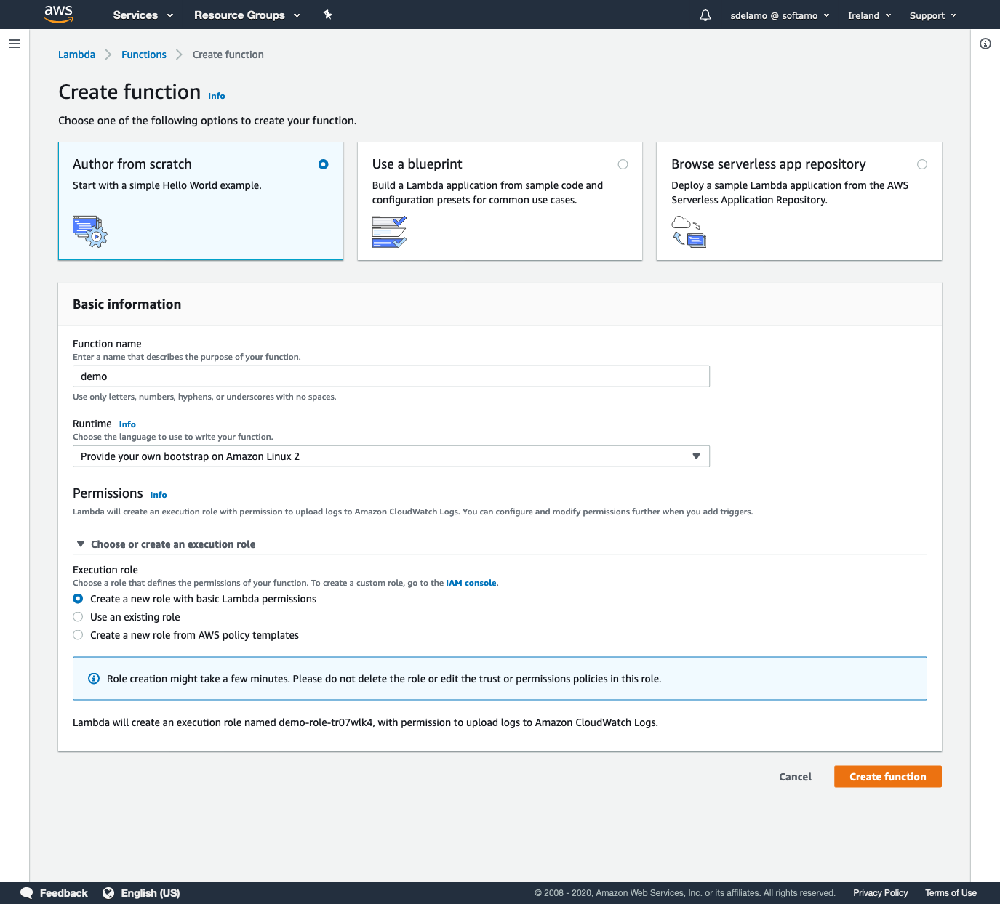

Deploy a Micronaut function as a GraalVM Native Image to AWS Lambda
Learn how to distribute a Micronaut function built as a GraalVM Native image to AWS Lambda Custom Runtime
Authors: Sergio del Amo
Micronaut Version: 2.0.1
1 Getting Started
Please, read about Micronaut AWS Lambda Support to learn more about different Lambda runtime, Triggers and Handlers and how to integrate with a Micronaut application.
The biggest problem with Java applications and Lambda is how to mitigate Cold startups. Executing GraalVM Native images of a Micronaut function in a Lambda Custom runtime is a solution to this problem.
If you want to respond to triggers such as queue events, s3 events or single endpoints you should opt to code your Micronaut functions as Serverless functions.
In this guide, we are going to deploy a Micronaut function as a GraalVM Native image to a AWS Lambda custom runtime.
1.1 What you will need
To complete this guide, you will need the following:
-
Some time on your hands
-
A decent text editor or IDE
-
JDK 1.8 or greater installed with
JAVA_HOMEconfigured appropriately
You will need also an AWS Account.
1.2 Solution
We recommend you to follow the instructions in the next sections and create the app step by step. However, you can go right to the completed example.
-
Download and unzip the source
or
-
Clone the Git repository:
git clone https://github.com/micronaut-guides/mn-serverless-function-aws-lambda-graalvm.git
Then, cd into the complete folder which you will find in the root project of the downloaded/cloned project.
2 Writing the App
Create a micronaut application with the aws-lambda feature using the CLI:
% mn create-function-app example.micronaut.complete --features=aws-lambda,graalvmor use Micronaut Launch
2.1 Code
We want to support a JavaBean as input and output types.
The input is a Book object:
package example.micronaut;
import edu.umd.cs.findbugs.annotations.NonNull;
import io.micronaut.core.annotation.Introspected;
import javax.validation.constraints.NotBlank;
@Introspected (1)
public class Book {
@NotBlank (2)
@NonNull (3)
private String name;
public Book() {
}
@NonNull
public String getName() {
return name;
}
public void setName(@NonNull String name) {
this.name = name;
}
}| 1 | Annotate the class with @Introspected to generate the Bean Metainformation at compile time. |
| 2 | name is required |
| 3 | Add a nullability annotation to help with Kotlin interoperability and help the IDE. |
The output is a BookSaved object:
package example.micronaut;
import edu.umd.cs.findbugs.annotations.NonNull;
import io.micronaut.core.annotation.Introspected;
import javax.validation.constraints.NotBlank;
@Introspected (1)
public class BookSaved {
@NotBlank (2)
@NonNull (3)
private String name;
@NotBlank (2)
@NonNull (3)
private String isbn;
public BookSaved() {
}
@NonNull
public String getName() {
return name;
}
public void setName(@NonNull String name) {
this.name = name;
}
@NonNull
public String getIsbn() {
return isbn;
}
public void setIsbn(@NonNull String isbn) {
this.isbn = isbn;
}
}| 1 | Annotate the class with @Introspected to generate the Bean Metainformation at compile time. |
| 2 | name and isbn are required |
| 3 | Add a nullability annotation to help with Kotlin interoperability and help the IDE. |
The application contains a class extending MicronautRequestHandler
package example.micronaut;
import io.micronaut.core.annotation.Introspected;
import io.micronaut.function.aws.MicronautRequestHandler;
import java.util.UUID;
@Introspected
public class BookRequestHandler extends MicronautRequestHandler<Book, BookSaved> { (1)
@Override
public BookSaved execute(Book input) {
BookSaved bookSaved = new BookSaved();
bookSaved.setName(input.getName());
bookSaved.setIsbn(UUID.randomUUID().toString());
return bookSaved;
}
}| 1 | The class extends MicronautRequestHandler and defines input and output types. |
The generated test shows how the verify the function behaviour:
package example.micronaut;
import static org.junit.jupiter.api.Assertions.assertNotNull;
import static org.junit.jupiter.api.Assertions.assertEquals;
import org.junit.jupiter.api.AfterAll;
import org.junit.jupiter.api.BeforeAll;
import org.junit.jupiter.api.Test;
public class BookRequestHandlerTest {
private static BookRequestHandler bookRequestHandler;
@BeforeAll
public static void setupServer() {
bookRequestHandler = new BookRequestHandler(); (1)
}
@AfterAll
public static void stopServer() {
if (bookRequestHandler != null) {
bookRequestHandler.getApplicationContext().close(); (2)
}
}
@Test
public void testHandler() {
Book book = new Book();
book.setName("Building Microservices");
BookSaved bookSaved = bookRequestHandler.execute(book); (3)
assertEquals(bookSaved.getName(),book.getName());
assertNotNull(bookSaved.getIsbn());
}
}| 1 | When you instantiate the Handler, the application context starts. |
| 2 | Remember to close your application context when you end your test. You can use your handler to obtain it. |
| 3 | Invoke the execute method of the handler. |
3 Lambda
3.1 Create Function
Create a Lambda Function. As a runtime, select Java 11 (Correto).

3.2 Upload Code
Micronaut’s eases the deployment of your functions as a Custom AWS Lambda runtime.
The main API you will interact with is AbstractMicronautLambdaRuntime. An abstract class which you can extend to create your custom runtime mainClass. That class includes the necessary code to perform the Processing Tasks described in the Custom Runtime documentation.
The generated project contains such a class:
package example.micronaut;
import com.amazonaws.services.lambda.runtime.events.APIGatewayProxyRequestEvent;
import com.amazonaws.services.lambda.runtime.events.APIGatewayProxyResponseEvent;
import io.micronaut.function.aws.runtime.AbstractMicronautLambdaRuntime;
import java.net.MalformedURLException;
import com.amazonaws.services.lambda.runtime.RequestHandler;
import edu.umd.cs.findbugs.annotations.Nullable;
public class BookLambdaRuntime extends AbstractMicronautLambdaRuntime<APIGatewayProxyRequestEvent, APIGatewayProxyResponseEvent, Book, BookSaved> {
public static void main(String[] args) {
try {
new BookLambdaRuntime().run(args);
} catch (MalformedURLException e) {
e.printStackTrace();
}
}
@Override
@Nullable
protected RequestHandler<Book, BookSaved> createRequestHandler(String... args) {
return new BookRequestHandler();
}
}bootstrap
We deploy our custom runtime code as a ZIP file. At the root of the ZIP file you need a bootstrap file.
If there’s a file named bootstrap in your deployment package, Lambda executes that file.
The generated application contains a bootstrap bash script:
#!/bin/sh
set -euo pipefail
./complete -Xmx128m -Djava.library.path=$(pwd)native-image.properties
To generate a GraalVM Native image of the application, we need a native-image.properties file.
Args = -H:Name=complete \
-H:Class=example.micronaut.BookLambdaRuntime-
The
H:Classargument defines the main class of your app. -
The
H:Nameargument defines the native image name. The Dockerfile references this name.
Dockerfile
The project includes a Dockerfile to generate a GraalVM Native image.
-
Uses the amazonlinux image
-
Builds the JAR of the function.
-
Install the necessary dependencies.
-
Downloads GraalVM community edition
-
Installs native-image utility.
-
With the native-image command and the JAR, generates a GraalVM native image
-
Bundles the native image of our function and the bootstrap file into a ZIP file.
FROM gradle:6.3.0-jdk11 as builder
COPY --chown=gradle:gradle . /home/application
WORKDIR /home/application
RUN ./gradlew build --no-daemon
FROM amazonlinux:2018.03.0.20191014.0 as graalvm
ENV LANG=en_US.UTF-8
RUN yum install -y gcc gcc-c++ libc6-dev zlib1g-dev curl bash zlib zlib-devel zip
ENV GRAAL_VERSION 20.1.0
ENV JDK_VERSION java11
ENV GRAAL_FILENAME graalvm-ce-${JDK_VERSION}-linux-amd64-${GRAAL_VERSION}.tar.gz
RUN curl -4 -L https://github.com/graalvm/graalvm-ce-builds/releases/download/vm-${GRAAL_VERSION}/${GRAAL_FILENAME} -o /tmp/${GRAAL_FILENAME}
RUN tar -zxvf /tmp/${GRAAL_FILENAME} -C /tmp \
&& mv /tmp/graalvm-ce-${JDK_VERSION}-${GRAAL_VERSION} /usr/lib/graalvm
RUN rm -rf /tmp/*
CMD ["/usr/lib/graalvm/bin/native-image"]
FROM graalvm
COPY --from=builder /home/application/ /home/application/
WORKDIR /home/application
RUN /usr/lib/graalvm/bin/gu install native-image
RUN /usr/lib/graalvm/bin/native-image --no-server -cp build/libs/complete-*-all.jar
RUN chmod 777 bootstrap
RUN chmod 777 complete
RUN zip -j function.zip bootstrap complete
EXPOSE 8080
ENTRYPOINT ["/home/application/complete"]The above file references the name used in the native-image.properties file.
deploy.sh
It includes a bash script to generate the ZIP file:
#!/bin/bash
docker build . -t complete
mkdir -p build
docker run --rm --entrypoint cat complete /home/application/function.zip > build/function.zipUpload the file
Execute ./deploy.sh and once you have a ZIP file, upload it

3.3 Handler
The handler used is the one created at MicronautLambdaRuntime.
Thus, you don’t need specify the handler in the AWS Lambda console.
However, I like to specify it in the console as well:
example.micronaut.BookRequestHandler
That value is exposed as an environment variable.

3.4 Test
You can test it easily.

You should see a 200 response:

4 Next Steps
Read more about Micronaut AWS Lambda Support